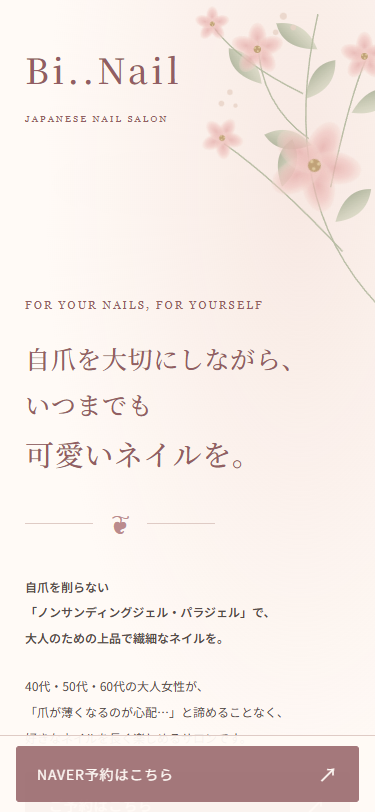
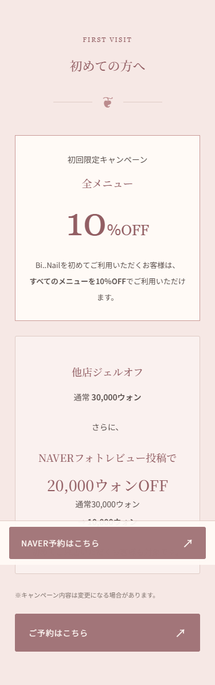

ROMANTIC FLORAL · やさしい / 上品 / フェミニン
制作済み日本語LPに基づくデザインシート · 2026.10.04
メイン / CTA
#925e63
ブラッシュピンク
#f6e8e5
セージグリーン
#e9ece1
ウォームアイボリー
#fffaf6
本文
#554b48
見出し：Noto Serif JP / 22px / 500
行間：39.6px（スマートフォン）
大人の女性が楽しめる、
上品で繊細なデザインをご提案します。
CTA：角丸3px / 線1px
余白17px 23px / 文字14px
10％OFF
全メニュー対象細い罫線とゆったりした余白。
装飾は文章の読みやすさを優先。
・花は余白に配置し、文章と重ねない。
・CTAはダスティローズで統一。
・見出しは明朝体、本文はゴシック体。
・本文はHTMLで保持し、翻訳に対応。
写真未確定：施術・オーナー写真は未提供。
現在はオリジナルSVGの花装飾を使用。
NAVER予約・InstagramのURLは未設定。
ファーストビュー

初回キャンペーン
